In 1985 scientists of the British Antarctic Survey reported that springtime ozone over Antarctica had fallen dramatically. Satellites soon mapped an ozone hole larger than the continent. Two years later, the Montreal Protocol began phasing out the chemicals behind it.
Yet on hot summer days, health agencies across Europe warn of too much ozone at ground level.
Same molecule. Protective high up, harmful near the ground. Why?
Today you will learn to:
see how light selects which reactions can happen;
combine steps into a catalytic cycle and cancel intermediates;
explain why NO₂ and sunlight alone do not build up ozone;
turn a rate constant into a lifetime.
Antarctic ozone hole, 22 September 2012; blue and purple mark the lowest ozone. Image: NASA, public domain, Wikimedia Commons.
Same molecule, two places
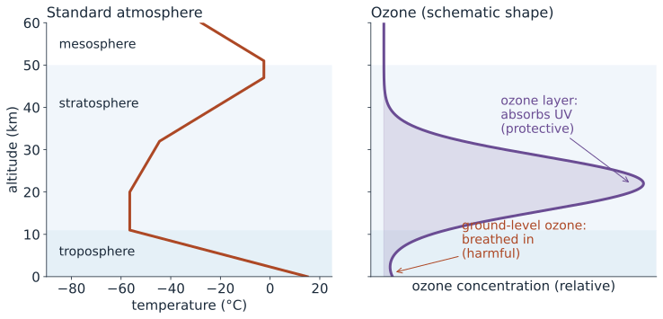
Temperature falls with height through the troposphere, then rises again in the stratosphere, because ozone absorbs ultraviolet light there and warms the air. Most ozone sits at about 15–35 km. A small amount near the ground is the ozone we breathe.
Light selects which reactions can happen
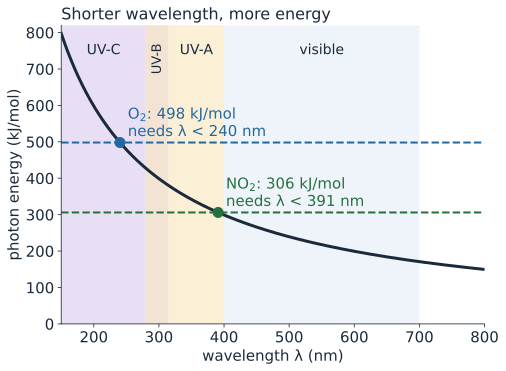
A photon’s energy is
E = \frac{hc}{\lambda}
Shorter wavelength, more energy. Per mole of photons, E ≈ 119 600 / λ(nm) kJ/mol.
To split O₂ (bond 498 kJ/mol) a photon needs λ < 240 nm: hard ultraviolet, available only high in the atmosphere.
NO₂ can be split by near-UV light below about 400 nm, which reaches the ground.
Energy is not enough: the molecule must absorb
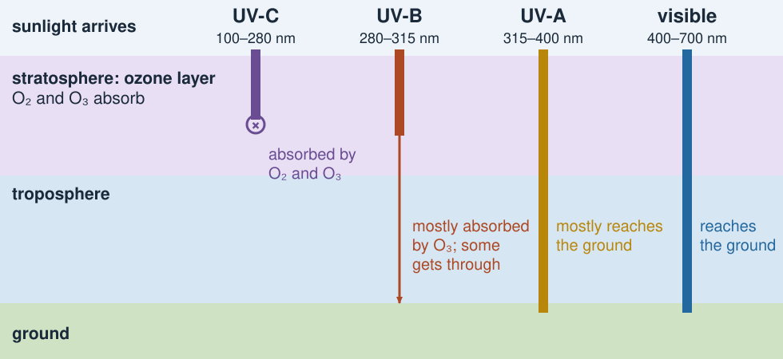
A photon can only drive a reaction if the molecule absorbs it. Energy above the bond energy is necessary but not sufficient.
O₂ absorbs the shortest UV. O₃ absorbs strongly between about 200 and 310 nm, the range that damages DNA.
So the ozone layer is a filter: it removes almost all UV-C and most UV-B before sunlight reaches the ground.
M is any collision partner, usually N₂ or O₂. It carries away the extra energy and is not consumed. This is the first half of the Chapman mechanism (1930).
Ozone is made and destroyed all the time
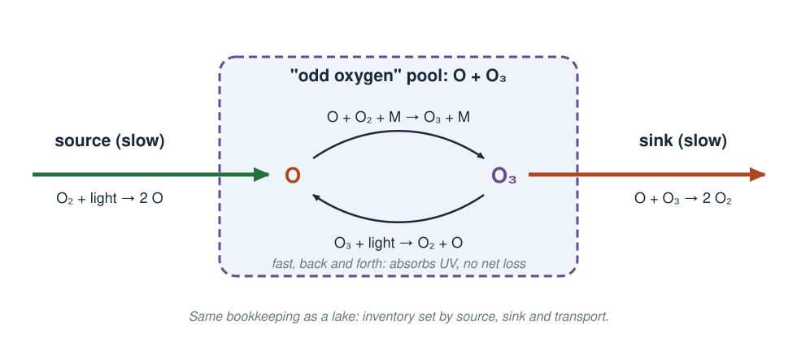
O and O₃ convert into each other quickly: each round absorbs a UV photon and turns it into heat. Real loss happens only when O meets O₃. The ozone amount is a balance of production, loss and transport, just like the lake balance in the last lecture.
How we measure the ozone layer
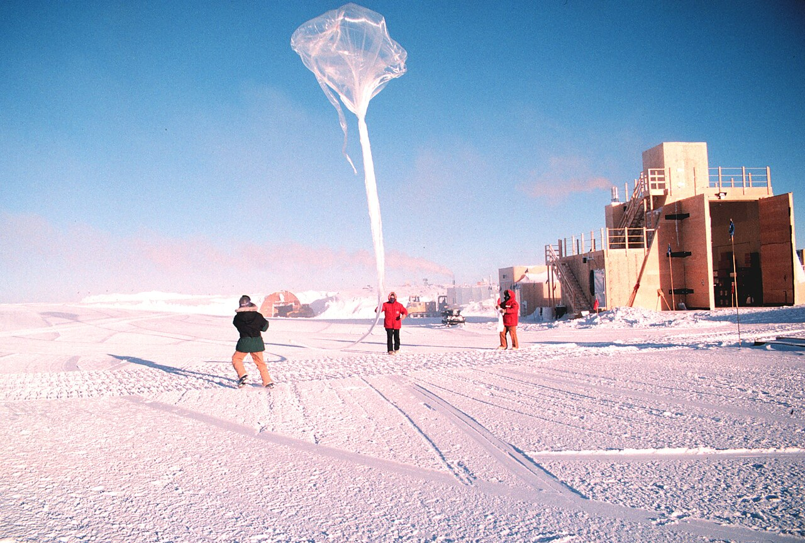
Launching an ozonesonde at the South Pole Station. Photo: NOAA Photo Library, public domain, Wikimedia Commons.
An ozonesonde is a small balloon-borne instrument that measures ozone as it rises to about 30 km. It gives the profile in the previous figure.
Ground spectrometers and satellites measure the total column: all the ozone above a point. It is reported in Dobson units. A typical column is about 300 DU, equal to a layer of pure ozone only about 3 mm thick at ground pressure.
The “ozone hole” is defined as columns below 220 DU.
A shortcut for ozone loss: catalysis
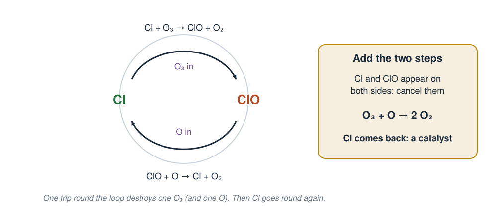
A chlorine atom attacks O₃; the ClO formed meets an O atom and gives Cl back. Chlorine is a catalyst: it is regenerated and can repeat the cycle many times until another reaction stops it.
Catalyst: Cl. Consumed in step 1, regenerated in step 2.
Intermediate: ClO. Formed in step 1, consumed in step 2.
Neither appears in the net reaction.
The net reaction says what one cycle does. It does not say how fast the cycle runs or how many times one Cl atom goes round. That needs kinetics.
Where the chlorine came from
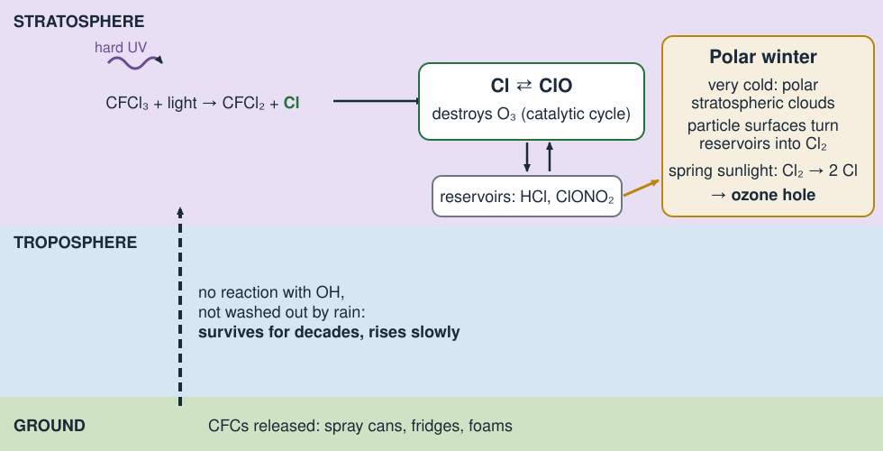
CFCs are so unreactive that they survive for decades in the lower atmosphere. They slowly reach the stratosphere, where hard UV splits off Cl. Most chlorine is then stored in reservoirs (HCl, ClONO₂), until the polar winter releases it.
Why a hole over Antarctica?
Polar stratospheric clouds over Oslo, Norway. Photo: Havardtl, CC BY 4.0, Wikimedia Commons.
In the dark polar winter the stratosphere becomes cold enough for polar stratospheric clouds.
On their particle surfaces, the reservoirs HCl and ClONO₂ react to form Cl₂. When the sun returns in spring, light splits Cl₂ into Cl atoms and catalytic loss runs fast.
This is a different mechanism from the simple cycle: it needs surfaces and different ClO cycles. Gas-phase chemistry alone did not predict it.
Check yourself
Why can ozone be made from O₂ in the stratosphere but not directly from O₂ at ground level?
In the cycle NO + O₃ → NO₂ + O₂, then NO₂ + O → NO + O₂: what is the catalyst, what is the intermediate, and what is the net reaction?
M appears on both sides of O + O₂ + M → O₃ + M. Why is it written at all?
True or false: “A catalyst lasts forever.”
Down to the ground: summer smog
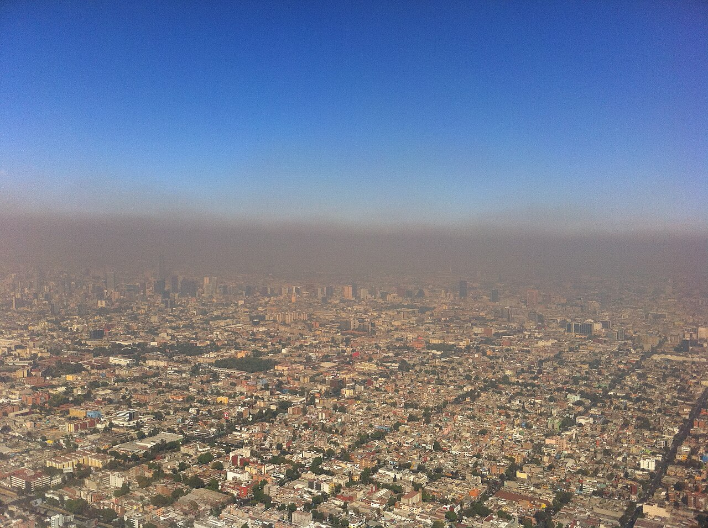
Photochemical smog over Mexico City, seen from the air. Photo: Fidel Gonzalez, CC BY-SA 3.0, Wikimedia Commons.
Near the ground there is no hard UV, so O₂ is not split. Ground-level ozone must be made another way.
Its ingredients are nitrogen oxides (NO + NO₂ = NOₓ, mainly from combustion), volatile organic compounds (VOCs) or CO, and sunlight.
Ozone then irritates airways and damages crops and forests. Episodes are worst in hot, sunny, still weather, as in many European heatwaves.
NO₂ and light alone: a null cycle
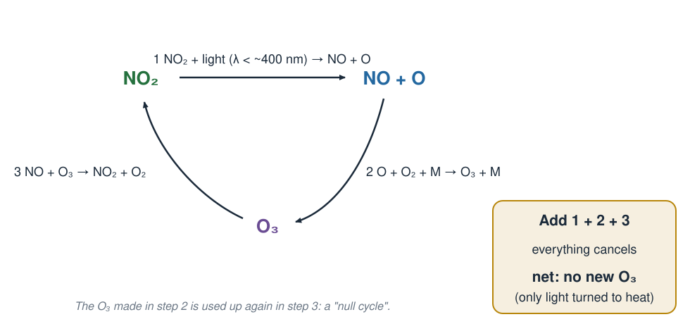
Sunlight splits NO₂; the O atom makes O₃. But NO then uses up that O₃ again. Add the three steps and everything cancels: no net ozone. In sunlight the three species reach a balance set by light and concentrations.
Peroxy radicals break the null cycle
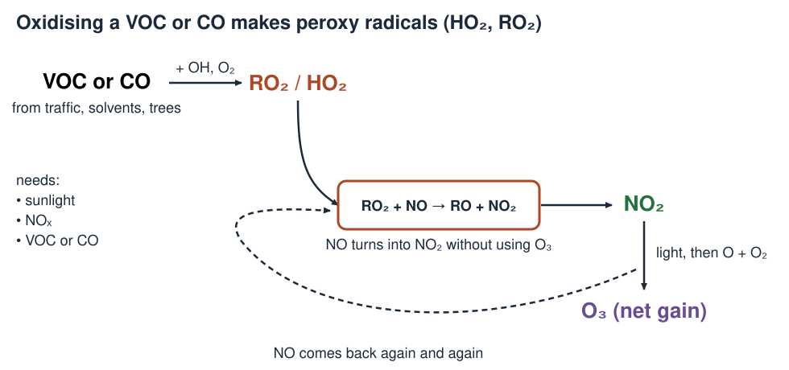
When OH attacks a VOC or CO, peroxy radicals (HO₂, RO₂) form. They convert NO to NO₂ without using O₃. Light then splits that NO₂, and the O atom becomes a new ozone molecule. Each NO can go round many times.
OH sets the pace: rate and lifetime
For a loss reaction X + OH → products, the rate is
R = k[\mathrm{X}][\mathrm{OH}]
Hold OH constant: k' = k[\mathrm{OH}], lifetime \tau = 1/k'.
Worked example. k = 1.0 × 10⁻¹² cm³ molecule⁻¹ s⁻¹, OH = 1.0 × 10⁶ molecules/cm³:
k′ = 1.0 × 10⁻⁶ s⁻¹
τ = 1.0 × 10⁶ s ≈ 11.6 days
half-life = 0.693 τ ≈ 8.0 days
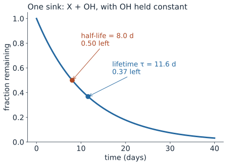
Lifetime decides how far a gas travels
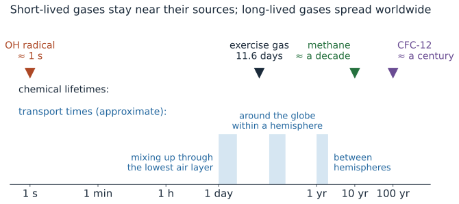
Compare a gas’s lifetime with transport times. OH lasts about a second and never leaves the air parcel where it formed. A gas lasting days to weeks is a regional problem. Methane and CFCs live long enough to spread over the whole globe.
Back to a surface station
Mobile air quality monitoring station in Zürich, Switzerland. Photo: Balise42, CC BY 4.0, Wikimedia Commons.
Ozone measured at a ground station rises. Can you conclude that stratospheric ozone increased, or name the source?
No. Surface ozone reflects:
local production from NOₓ + VOC + sunlight;
local loss by NO and by deposition to surfaces;
transport of ozone formed elsewhere, and mixing from above.
You would need precursor measurements, weather data and altitude-resolved ozone.
Common mistakes to avoid
“Ozone is good” or “ozone is bad.” It depends on where it is.
“Enough photon energy means the reaction happens.” The molecule must also absorb that wavelength.
“M is a reactant.” It is a collision partner; it is not consumed.
“The net equation shows the mechanism and the rate.” It shows stoichiometry only.
“NO₂ + sunlight makes ozone pile up.” Alone, it is a null cycle; peroxy radicals are needed.
“The lifetime is the half-life.” τ = 1/k′; the half-life is 0.693 τ.
“A catalyst works forever.” Reservoir species capture it.
Explore: OH and the lifetime of a gas
Worked example: k = 1.0 × 10⁻¹², OH = 1.0 × 10⁶ molecules/cm³, lifetime 11.6 days, half-life 8.0 days.
 Antarctic ozone hole, 22 September 2012; blue and purple mark the lowest ozone. Image: NASA, public domain, Wikimedia Commons.
Antarctic ozone hole, 22 September 2012; blue and purple mark the lowest ozone. Image: NASA, public domain, Wikimedia Commons. Bełchatów coal power station, Poland. Photo: Petr Štefek, CC BY 2.5, Wikimedia Commons.
Bełchatów coal power station, Poland. Photo: Petr Štefek, CC BY 2.5, Wikimedia Commons.